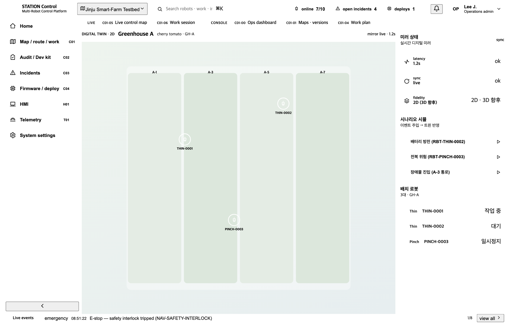
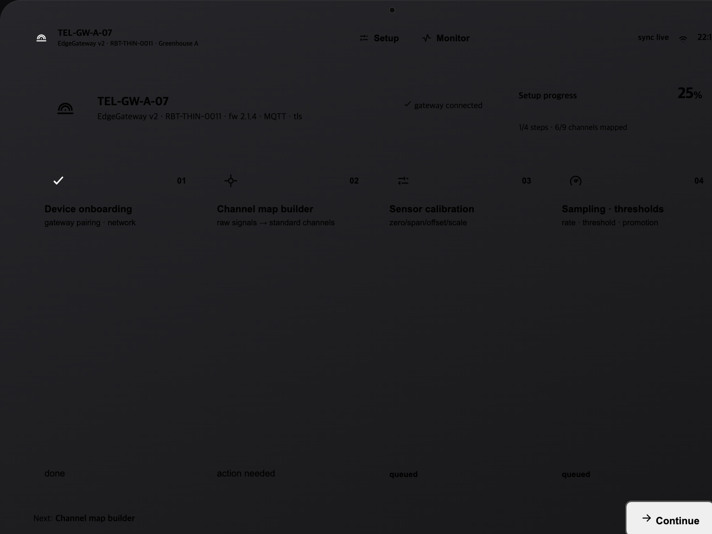

🖥
S3 · 시뮬레이션
실물 전 조합 가상 통합·시험가동
실제 로봇 하드웨어가 조립되기 전에, 디지털트윈 + 텔레메트리 게이트웨이로 이 조합 — {에이지 모바일 · 메타 매니퓰 · 엔드이펙터} — 이 서로 맞물려 동작하는지 미리 검증한다. 가상 온실에서 자율주행·인식·작업·이벤트 대응을 시험 가동해, 실물 투입 전에 통합 결함과 신호 매핑 오류를 걸러낸다.
1
디지털트윈에 조합 모듈 배치
가상 온실 모델에 이번 조합의 {모바일·매니퓰·엔드이펙터}를 배치하고 자율주행·작업을 시뮬레이션한다. 실물 없이 조합의 물리·동작 적합성을 먼저 본다.

2
텔레메트리 게이트웨이로 가상 신호 송출 → 표준 채널 매핑
시뮬레이터가 만든 원천 신호(raw)를 게이트웨이가 받아 STATION 표준 채널로 매핑한다. 채널·단위·샘플링이 계약대로 흘러야 이후 관제가 동작한다.
원천 신호(raw)→
Telemetry Channel→
표준 채널

3
자율주행·인식·경로 시뮬레이션
가상 신호가 표준 채널로 들어오면, 관제 맵 위에서 로봇의 자율주행·인식·경로를 2D 트윈 기반으로 시험한다. 경로 충돌·인식 누락을 실물 전에 점검한다.

4
데이터 품질·지연 진단
게이트웨이 인입 데이터의 누락·drift·단위 오류·지연을 점검한다. 표준 채널로 매핑된 값이 실제로 신뢰 가능한 품질인지 — 관제·작업 판단의 토대를 검증한다.
인입 데이터→
Telemetry · quality→
품질 진단(누락·drift·단위·지연)
⌗ Sim · 데이터 품질 진단

5
가상 이벤트 주입
배터리 방전·전복 같은 가상 이벤트를 시뮬레이터에 주입해, Event 스파인을 타고 관제 알림이 제대로 발생·전파되는지 확인한다. 실제 사고 전에 알림 경로를 검증하는 단계.
가상 이벤트→
Event 스파인→
관제 알림
⚠ Sim · 가상 이벤트 주입·알림
CONFIRM 채널 단위 미정의 — 게이트웨이 확인 처리
매핑 중 일부 채널에서 단위 미정의(unit mismatch) 발생 — 원천 신호 단위와 표준 채널 단위가 어긋나 게이트웨이가 confirm(hold)으로 잡는다.
해결: 단위 변환 규칙(예: mm→m, raw→%)을 지정한 뒤 해당 채널을 재매핑하면 표준 채널로 정상 인입된다.
→
가상 통합·시험가동 통과 — 실물 로봇으로 S4 · 이기종 다중 로봇 통합 관제로 이어진다.